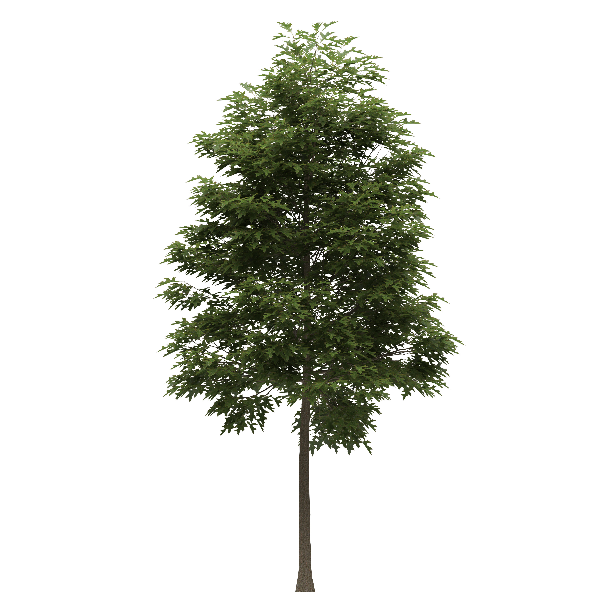

Pin Oak
Quercus palustris

Native to the Midwest and mid-Atlantic States, it is usually found in valleys, floodplains, and stream banks. The common name of this tree comes from its lower branches, which in the wild are frequently shadowed by other trees before eventually dying and breaking off to leave persistent pin-like stubs.
- Order: Fagales
- Family: Fagaceae
- Genus: Quercus L. – oak
- Bloom Period: Spring
- Foliage Color: Green